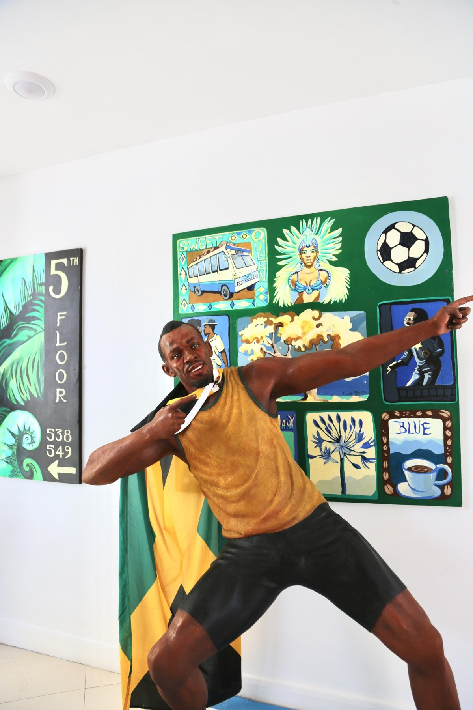

Portraiture · S Hotel · Montego Bay
Usain Bolt
Portrait sculpture
A portrait of Usain Bolt in his signature victory pose, holding the Jamaican flag, created for S Hotel Montego Bay.

Portraiture · S Hotel · Montego Bay
Portrait sculpture
A portrait of Usain Bolt in his signature victory pose, holding the Jamaican flag, created for S Hotel Montego Bay.
